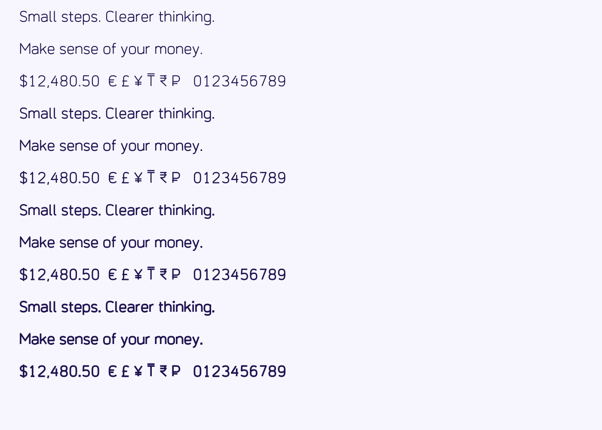

Nevlin Sprout is an upright geometric sans serif designed for approachable financial education. Its gently squared bowls, open forms and distinctive capital I, lowercase l and figure 1 support clear lesson text and amounts. The family includes Regular, Medium, SemiBold and Bold. Optional tabular figures align numerical columns and an optional slashed zero distinguishes zero from O.

The outlines originate in newly authored geometric drawing sources. No Inter, SF Pro or other font binary is used as a build input. Development uses AI-assisted code, editable UFO sources and Fontmake. This is an unreleased review candidate; its originality and suitability remain subject to editorial and independent type-design assessment.
The working family name, designer attribution and publication metadata need confirmation during onboarding. Source hosting is planned in the Nevlin public font project. The current review package is prepared locally and is not a claim that this family is already available in Google Fonts.